China Employee Termination in 2026: Pulse Decision-Switchboard Brief for Foreign Employers
Key takeaways
- China termination execution improves when teams run a decision-switchboard model: ask the right gate question at each step and route to the right owner immediately.
- For foreign employers, risk usually spikes at cross-functional handoffs, not at the legal concept level.
- Plain-language legal grounding should come first; tactical actions should follow in short, owner-based routes.
- Settlement outcomes are only as strong as payroll and tax execution alignment.
- Local implementation variance remains real; unresolved local checks should block final action.
Pulse opening: the practical signal for global teams
If your regional or HQ team manages China exits remotely, the fastest way to lose control is to run terminations as a linear checklist with weak routing logic. A switchboard approach is better: at every decision node, ask one control question, then route to legal, HR, manager, payroll, or compliance with a clear stop/go outcome. This creates speed with discipline, which is exactly what foreign operators need under payroll cutoff pressure.
Plain-language legal context first
China is not an at-will termination jurisdiction. Employer-initiated termination generally requires a lawful basis under the Labor Contract Law framework, plus evidence and process coherence that can survive arbitration review. Three anchors matter most for non-local employers:
- Labor Contract Law: route boundaries and severance fundamentals.
- Implementation Regulations (Decree 535): practical interpretation of route and execution requirements.
- SPC labor-dispute interpretation: how evidence and procedure are tested in disputes.
Operationally, this means a “correct” route can still fail if process records, communication, and payroll treatment do not align.
Decision switchboard: six gate questions
Gate 1 — Route Gate
Question: Is one statutory route clearly documented and consistently described?
If no: legal owns correction; all employee-facing action pauses.
Gate 2 — Evidence Gate
Question: Is chronology complete, versioned, and contradiction-free?
If no: HR/compliance owns reconciliation; no progression.
Gate 3 — Communication Gate
Question: Are manager and HR scripts approved and synchronized?
If no: manager channel pauses; script re-brief required.
Gate 4 — Settlement Gate
Question: Do settlement terms match legal intent and employee explanation?
If no: legal + HR re-draft and re-approve.
Gate 5 — Payroll/Tax Gate
Question: Do payment components map correctly to payroll and tax treatment before lock?
If no: payroll + legal co-sign correction; hold release.
Gate 6 — Closure Gate
Question: Is payment proof and closure evidence packet complete and retrievable?
If no: case cannot close.
Why this format is useful for foreign employers
International teams often have limited local context and limited time. The switchboard model translates legal complexity into concise decision routing: what question is unresolved, who owns the fix, and whether the case is paused or cleared. That reduces drift and avoids the common failure where everyone believes someone else has validated a key assumption.
Scenario-driven application
Scenario A: Valid route, weak evidence
A company has a seemingly valid termination rationale, but chronology logs contain gaps and mixed versions. Gate 2 fails. The team pauses communication, cleans the record trail, and restarts only after reconciliation. Outcome: slower movement, lower dispute exposure.
Scenario B: Signed settlement, unresolved payroll coding
A settlement is agreed quickly, but one component is miscoded in payroll setup before cutoff. Gate 5 fails. Payroll/legal co-sign correction is triggered; release is held until mapping is aligned. Outcome: cleaner defensibility after payment.
Daily SOP by role
HR
- Run switchboard gates daily for all active cases.
- Enforce pause rules on failed gates.
- Track owner + ETA for each unresolved node.
Legal
- Own Gate 1 route integrity and Gate 4 settlement language.
- Co-sign Gate 5 where legal interpretation affects payment.
- Keep concise risk notes for leadership.
Manager
- Use approved script only.
- Provide factual updates with dates and source records.
- Escalate any case change immediately.
Payroll/Finance
- Map each payment line to legal term + tax handling.
- Complete pre-lock validation.
- Archive payment proof and reconciliation outputs.
Compliance/Ops
- Audit gate failures and aging.
- Flag repeated root causes by team/city.
- Propose control tuning weekly.
Required document checklist
- Canonical route memo
- Versioned chronology/evidence log
- Approved communication scripts
- Settlement mapping sheet
- Payroll/tax mapping worksheet
- City-level validation memo
- Payment proof + closure archive checklist
Exception playbook
- Route drift: stop action, reissue canonical route, legal re-approval.
- Evidence conflict: freeze progression, reconcile chronology, reopen after pass.
- Script deviation: suspend manager contact, re-brief, log acknowledgement.
- Payroll mismatch: trigger legal-payroll correction lane, rerun pre-lock gate.
- Local uncertainty: hold release until city validation is complete.
- Closure gap: keep case open until evidence packet is complete.
System implementation notes
Suggested fields: case_id, city, gate1_route, gate2_evidence, gate3_comms, gate4_settlement, gate5_payroll, gate6_closure, owner, eta, status, last_update.
Suggested controls:
- Hard pause when Gate 1 or 2 fails.
- Pre-lock hold when Gate 5 is unresolved.
- Closure lock when Gate 6 is incomplete.
- Mandatory reason codes for every failed gate.
Common mistakes and prevention
- Mistake: treating route confirmation as completion.
Prevention: require all six gates green before closure.
- Mistake: late payroll engagement.
Prevention: move Gate 5 to pre-lock mandatory.
- Mistake: informal manager messaging.
Prevention: script controls + acknowledgement logs.
- Mistake: no local validation.
Prevention: mandatory city memo before final action.
What to do now
- Implement six-gate switchboard in active tracker.
- Assign owner/ETA to every failed gate.
- Add legal-payroll co-sign rule before lock.
- Create one-page city validation memo template.
- Report weekly failed-gate trends to leadership.
What to watch next
- Ongoing dispute focus on evidence/procedure coherence.
- Continued city-level variation in practical enforcement.
- Settlement-tax handling as a recurring cross-functional risk.
FAQ
Is this legal advice?
No. This is an informational operating brief.
Can unilateral termination still be used?
Potentially yes, when statutory conditions and evidence support it.
Why highlight payroll in termination planning?
Because payment execution can materially affect dispute defensibility.
Is local review optional?
For foreign employers, it should be treated as mandatory risk control.
Legal depth appendix (secondary)
This brief is grounded in the Labor Contract Law, Decree No. 535 implementation regulations, and SPC labor-dispute interpretation, with practitioner/market interpretation from China Briefing, Littler, ICLG, and PwC to support foreign-employer operational decisions.
Disclaimer
This content is informational only and does not constitute legal, tax, or employment advice. Seek qualified PRC legal and tax counsel for case-specific decisions.
Sources
- National People’s Congress — Labor Contract Law of the PRC (English): http://www.npc.gov.cn/zgrdw/englishnpc/Law/2007-12/13/content_1384064.htm (accessed 2026-03-04).
- State Council — Implementation Regulations of the Labor Contract Law (Decree No. 535): https://www.gov.cn/gongbao/content/2008/content_1124615.htm (accessed 2026-03-04).
- Supreme People’s Court — Interpretation on Application of Law in Labor Dispute Cases (Fa Shi [2020] No. 26): https://www.court.gov.cn/fabu/xiangqing/243981.html (accessed 2026-03-04).
- China Briefing / Dezan Shira — Employee Termination in China (updated 2025-10-17): https://www.china-briefing.com/news/employee-termination-in-china/ (accessed 2026-03-04).
- Littler — Key Recent Developments in China’s Employment Law: https://www.littler.com/news-analysis/asap/key-recent-developments-chinas-employment-law-china-us-comparative-perspective (accessed 2026-03-04).
- PwC Worldwide Tax Summaries — PRC Individual: Taxes on Personal Income: https://taxsummaries.pwc.com/peoples-republic-of-china/individual/taxes-on-personal-income (accessed 2026-03-04).
- ICLG / Zhong Lun — Employment and Labour Laws and Regulations: China: https://iclg.com/practice-areas/employment-and-labour-laws-and-regulations/china (accessed 2026-03-04).
Need local employment support in China?
If you need a compliance-first partner for hiring, payroll, and risk controls in China, China-Payroll.com can help evaluate the right setup.
Image Prompt Pack
Create a 16:9 hero image for article title: 'China Employee Termination in 2026: Pulse Decision-Switchboard Brief for Foreign Employers'. Scene: global operations team evaluating workforce model options for China market entry. Include motifs: decision matrix, …